Обзор
Объемы воды — это объекты формы, которые можно использовать в самых разных обстоятельствах, например, в реках, озерах, бассейнах, лужах или даже океанах.
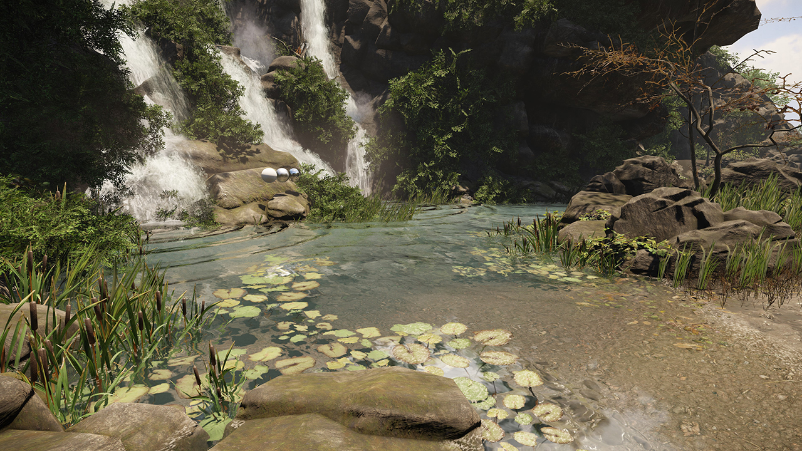
Свойства
Подробное описание свойств области Фигуры см. Форма.
Недвижимость | Описания | ||||||
|---|---|---|---|---|---|---|---|
Глубина | Определяет, насколько глубоким должен быть объем воды. | ||||||
Скорость | Указывает, с какой скоростью должна двигаться вода. Не используется для объемов воды, унаследованных от Area Shapes. | ||||||
Плотность тумана | Определяет плотность тумана. | ||||||
Цвет тумана | Определяет цвет подводного тумана. | ||||||
Множитель цвета тумана | Определяет яркость цвета подводного тумана. | ||||||
Цвет тумана, на который влияет солнце | Если это правда, значение цвета солнца, установленное в Environment Editor (старая версия от 26 февраля) повлияет на цвет тумана в объеме воды. | ||||||
Затенение туманом | Если включено, поверхность водного объема получит тени. Вы можете управлять темнотой тени, используя допустимое значение от 0 до 1. r_FogShadowsWater для этого необходимо установить значение «1», что в настоящее время доступно только в очень высоких характеристиках.
| ||||||
Шапочный туман на глубине объема | Если установлено значение false, туман будет продолжать отображаться ниже указанной глубины воды. | ||||||
U-шкала | Указывает, насколько текстура водной поверхности (выпуклости) выложена плиткой по горизонтали. | ||||||
V-шкала | Указывает, насколько текстура водной поверхности (выпуклости) выложена плиткой по вертикали. | ||||||
Каустика | Включает каустику для этого объекта. | ||||||
Каустическая интенсивность | Управляет интенсивностью каустики (масштабирует нормали поверхности при рендеринге на карту каустики, создавая более сильные каустики).
| ||||||
Каустическая черепица | Это множитель для мозаики, применяемой к нормалям поверхности во время генерации каустики. Он используется для масштабирования генерации каустики независимо от материала поверхности в случаях сильных тайловых нормалей или наоборот.
| ||||||
Каустическая высота | Управляет высотой над водным объектом, на котором можно использовать каустику. Это можно использовать для создания каустики на выступах и других близлежащих объектах.
| ||||||
Расширенный | Описания | ||||||
Фиксированный объем | Проведет луч вниз, чтобы найти объект-сосуд и вылить в него необходимое количество воды. Для объектов static он попытается логически объединить все окружающие объекты static, которые пересекаются с первым судном. Использование Нет динамической воды отметьте кисти, которым это не нужно. | ||||||
Точность объема | Уровень воды будет рассчитываться до тех пор, пока результирующий объем не окажется в пределах этой (относительной) разницы от целевого объема. Если для него установлено значение 0, он будет достигать жестко запрограммированного ограничения итерации. | ||||||
Выдавить границу | Вытянет границу на заданное расстояние. Это особенно полезно, если волновой сим включен, поскольку волны могут поднять поверхность и, таким образом, обнажить открытые края, если они точно совпадают с геометрией судна. | ||||||
Выпуклая граница | Возьмем выпуклую оболочку границы. В основном полезно, если в противном случае граница имела бы несколько контуров, что не поддерживается в областях. | ||||||
Ограничение размера объекта | В вытеснении воды будет участвовать только объект, объем которого больше этого. Это значение устанавливается в долях фиксированного объема. | ||||||
Волновая SIM-ячейка | Размер ячейки для моделирования волн, 0 означает отсутствие волн. Может быть включен независимо от того, используется ли фиксированный объем или нет. | ||||||
Скорость волны | Устанавливает, насколько быстро выглядит движение воды. | ||||||
Демпфирование волн | Стандартное демпфирование. | ||||||
Временной шаг волны | Возможно, потребуется уменьшить скорость, чтобы сохранить стабильность, если используются более агрессивные значения скорости. | ||||||
Минимальная волна Вел | Порог сна для моделирования. | ||||||
Ячейки глубины | Устанавливает глубину движущегося слоя воды (в единицах Wave Sim Cell). Большие значения делают волны более «драматичными». | ||||||
Предел высоты | Устанавливает жесткий предел высоты волны (в единицах Wave Sim Cell). | ||||||
Сопротивление | Устанавливает, насколько сильно движущиеся объекты передают скорость воде. | ||||||
Рост площади сима | Если ожидается, что изменение уровня воды приведет к расширению территории, сетка волнового моделирования должна принять это во внимание с самого начала. При этом задается прогнозируемый рост в долях от исходного размера. Если Wave Sim не используется, это не будет иметь никакого эффекта. |
При редактировании формы или области можно привязать вершину к местности или физическим объектам, используя Ctrl + Shift + LMB.
Это справедливо для всех объектов Area, кроме окклюдеров.
Объемы воды также имеют специальную интерпретацию вспомогательных типов (используйте a_[суффикс], чтобы отобразить вспомогательные элементы только для областей). a_g нарисует контур и мозаичную поверхность, a_gj нарисует волновую симуляцию в виде поля высот в виде шахматной доски, a_l нарисует геометрию судна (union всех перекрывающихся потенциальных сосудов).
Консольные переменные
CVar | Описание | Ценности |
|---|---|---|
r_WaterVolumeCaustics | Включает или отключает каустику для объемов воды. | 0–1 (по умолчанию зависит от системы — в настоящее время 0 для всех, кроме PC high-spec). |
r_WaterVolumeCausticsDensity | Устанавливает плотность сетки сетки. | 16–256 (по умолчанию 128 для более низких спецификаций, 256 для высоких). |
r_WaterVolumeCausticsMaxDist | Устанавливает максимальное расстояние обзора, на котором видны каустики. | Что-либо. По умолчанию 25. |
r_WaterVolumeCausticsRes | Устанавливает разрешение карты каустики/g-буфера. | Разрешение текстур. По умолчанию 1024 для высоких характеристик, 512 для низких. |
r_WaterCausticsSnapFactor | Устанавливает коэффициент привязки каустической визуализации, помогает предотвратить сглаживание во время движения. | Что-либо. По умолчанию: 0,1. |
Примеры использования
Каустика
Каустика — отличный способ придать объемам воды гораздо больший визуальный эффект и больше вовлечь их в созданные сцены. Для получения дополнительной информации см. Руководство CRYENGINE V.
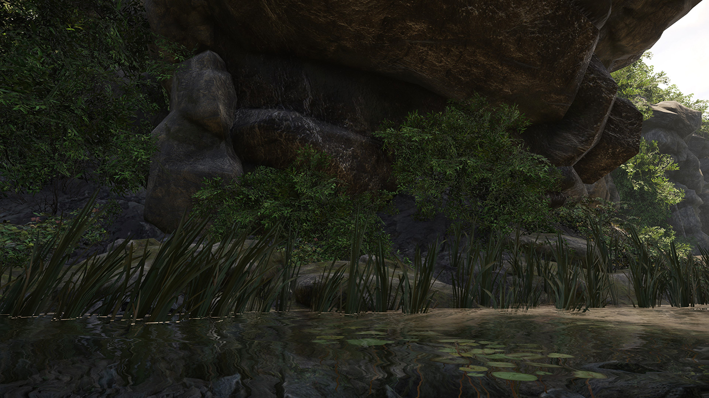 | 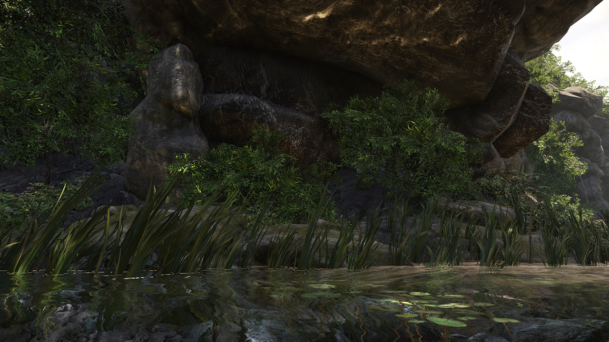 |
| Каустика выключена | Каустика включена |
|---|
Затенение туманом
Туманные тени придают реальную визуальную глубину водным объемам, а также позволяют дополнительно использовать глобальную функцию Vol Fog Shadows, доступную в Настройки уровня.
Из-за технических ограничений использование Вол Туманные Тени ограничит функцию непрозрачности Затенение туманом параметр должен быть выключен или заполнен.
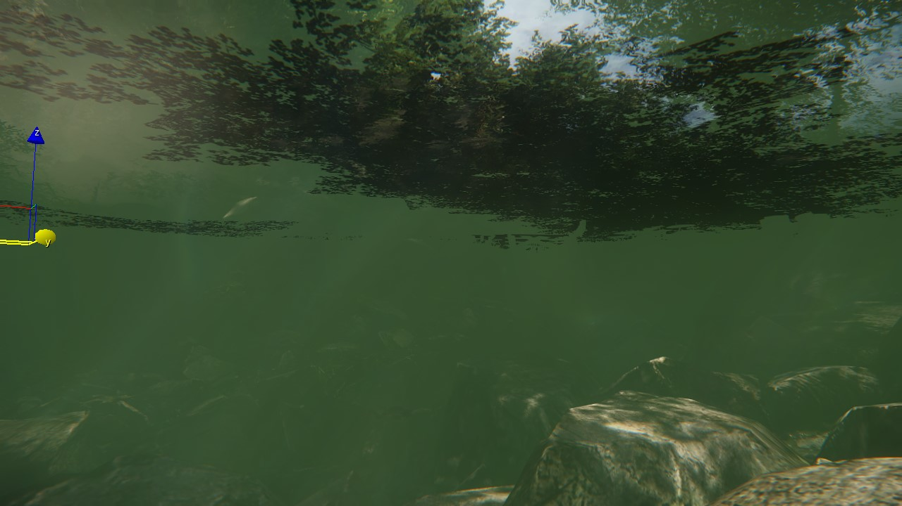 | 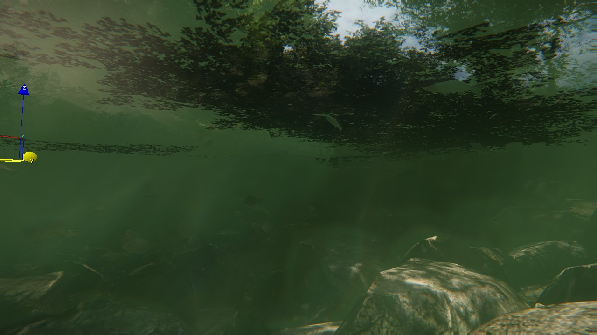 |
| Vol Туманные тени отключены | Vol Туманные тени включены |
|---|
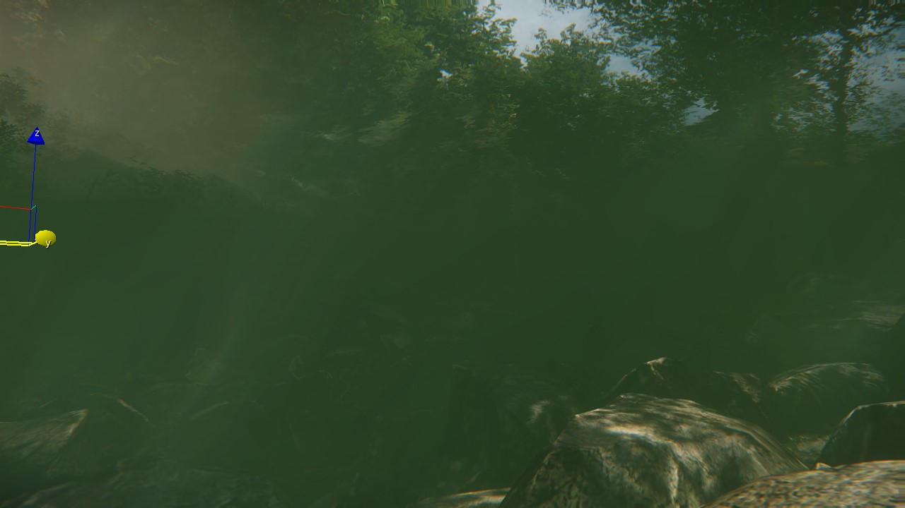 | 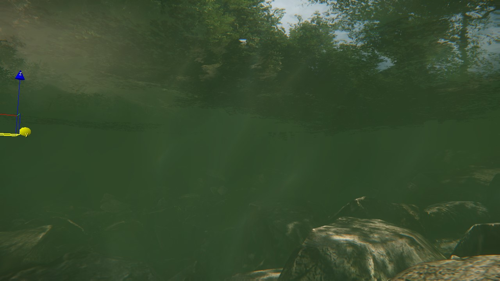 | 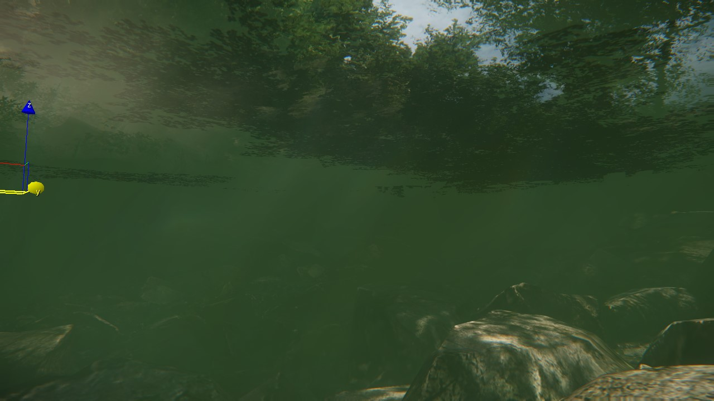 |
| Затенение туманом 0 | Туманное затенение 0.25 | Туманное затенение 0.5 |
|---|
Глубина
Глубина Параметр определяет как визуальную, так и физическую глубину водного объема. Такие вещи, как эффект подводного искажения, основаны на настройке глубины.
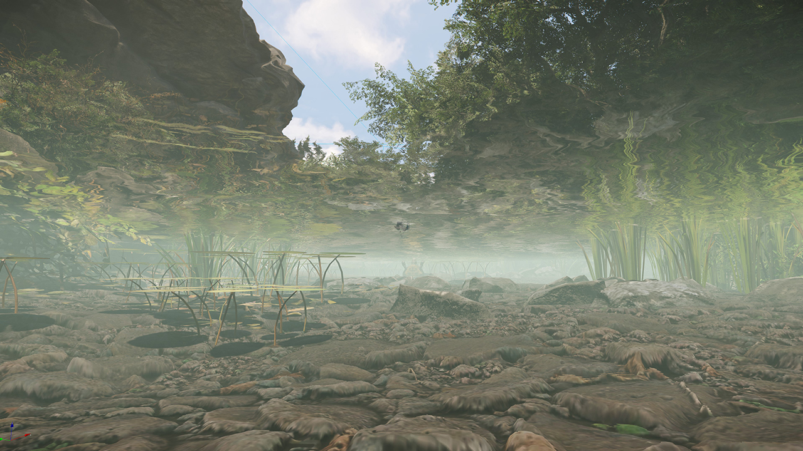 | 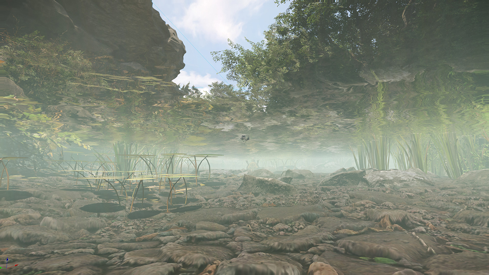 |
| Глубина 0 | Глубина 10 |
|---|
Шапочный туман на глубине объема
Если это отключено, настройки тумана из объема воды будут бесконечно отображаться по оси Z (вниз).
Пример использования: если у вас есть комната, в которую можно попасть под объем воды, вы, вероятно, активируете этот параметр, чтобы туман не был виден внутри комнаты.
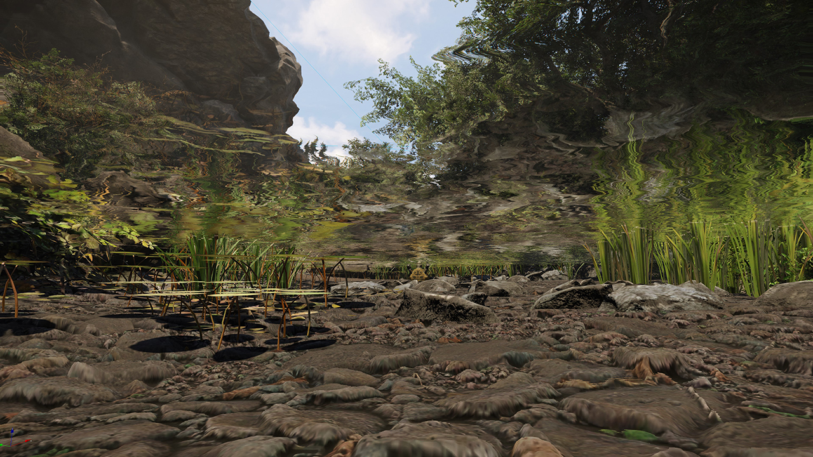 | |
| Глубина 0 / Крышка тумана False | Глубина 0 / Туман на крышке Истинный |
|---|
Высота
Хотя Высота Параметр не используется для объемов воды, он может быть полезен для визуализации краев объема, которые обычно скрыты под землей. 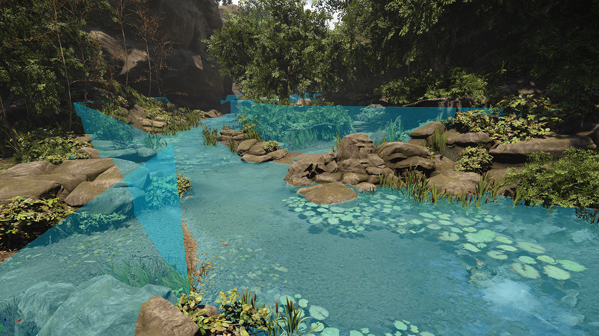
Скорость
Хотя скорость не поддерживается объемами воды (поскольку не существует простого способа определить направление произвольной пользовательской формы с бесконечными результатами), существует простой способ физикализировать объемы воды.
Реки поддерживают параметр «Скорость» и могут быть размещены без какого-либо визуального представления, просто не применяя материал к объекту. Наложение рек поверх объемов воды (не забудьте сопоставить глубину!)
Размещая реки для этого использования, обязательно держите их прямо (параметр «Скорость» применяется только для начального вектора, прохождение поворотов не поддерживается) и перекрывайте места, где вы хотите, чтобы они изменили курс, чтобы они не застряли.
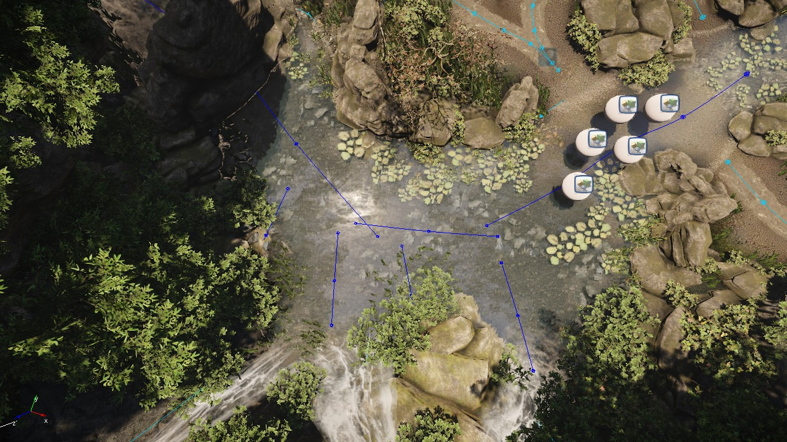 | 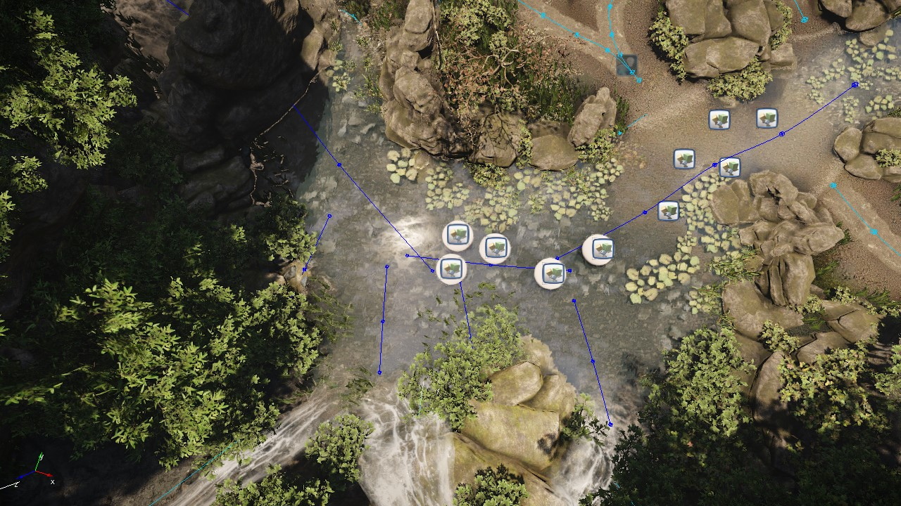 | 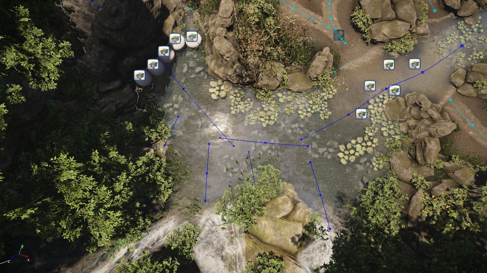 |
В приведенном выше примере у нас есть три основные реки (с внешними опорами для имитации водопада) поверх основного объема воды, несущие с собой несколько объектов RigidBodyEx для поездки.